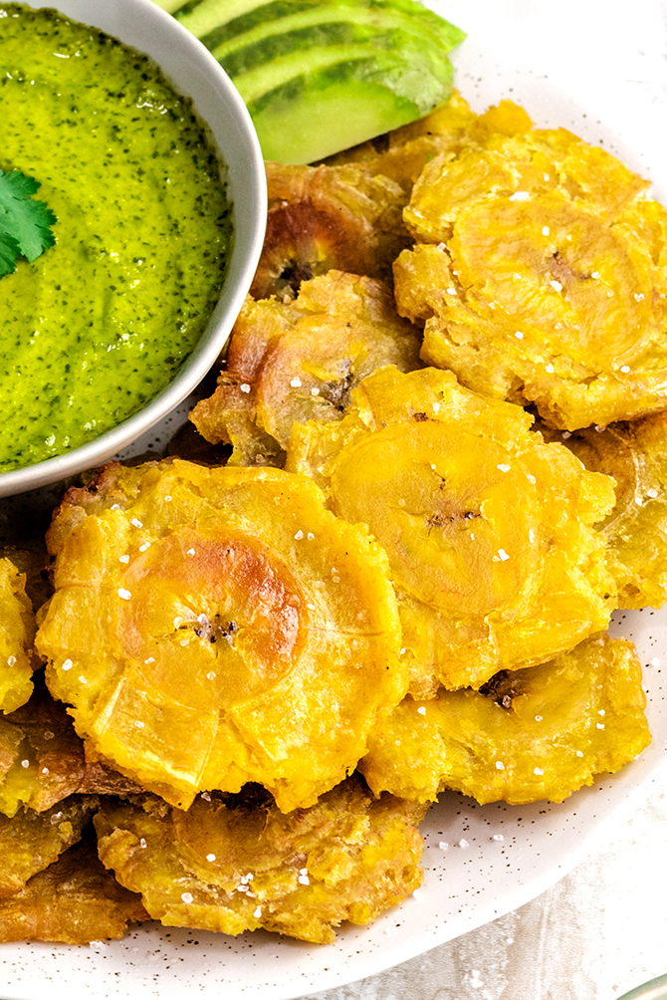

Tostones

Description
Tostones are crispy, savory, salty, golden coins of pure deliciousness.
Popular throughout the Caribbean, twice-fried plantains are a snack that will make you feel like you're walking on sunshine.
Ingredients
- 4 green plantains
- 1 cup vegetable or canola oil, or as needed
- 2 cups water
- 4 cloves garlic, minced
- 1 tablespoon kosher salt, plus more to top
- Juice of 1 lime
Steps
- Cut the ends off of each plantain, and use a knife to cut through the skin of the plantain, lengthwise, from top to bottom.
Try to only to cut through the skin, as you don't want to slice into the inner portion, which will form the tostones.
- Use your fingers to pry open and peel off the tough outer skin. Discard the skin of the plantains.
- Cut the plantains into pieces, about 1" thick.
- Fill a large, heavy-bottomed skillet about a third of the way with oil.
Heat over medium for a few minutes to warm up the oil just slightly.
- Meanwhile, in a large bowl, combine the water, garlic, kosher salt, and lime juice. Set aside.
- Add the plantain slices to the oil. The oil should be just warm enough that it begins to lightly bubble shortly after adding the plantains,
but should not bubble vigorously. Fry the planatins until softened and golden all over, about 4 minutes on each side.
Use a slotted spoon or tongs to transfer to a paper towel lined plate.
- Using the bottom of a glass, plate, or can, gently flatten each fried plantain piece.
Smash them just enough that they flatten out, but don't try to make them too thin, or they will break apart.
- Dip the flattened plantain coin in the garlic-lime water.
Let it sit for about 10 seconds, then remove from the water and gently pat dry with a paper towel.
Repeat with remaining fried plantains.
- When nearly ready to serve, heat oil over medium-high heat.
Add the flattened plantains back to the oil in batches and briefly fry to crisp, about 1 minute per side.
Remove with a slotted spoon and transfer to a paper towel lined plate.
- Sprinkle with salt. Serve with Guacamole or other sauces, if desired.